果言蔬语农庄基地
特色介绍
- 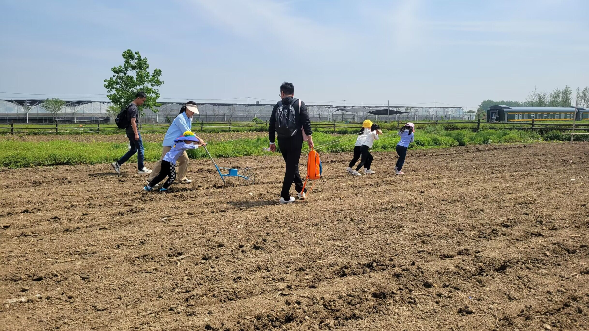
亲子乐耕
Container Reception Center
在互动过程中,家长也可以学习一些育儿知识和技巧,发现孩子的新特点,这会使得家长的育儿更加得心应手。 所以,亲子活动对孩子和家长来说,都有很大的好处,家长应该积极组织这方面的活动,与孩子一起参与。

- 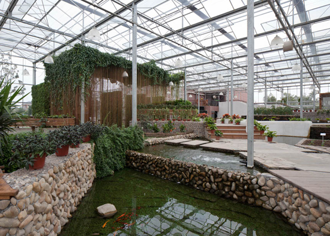
- 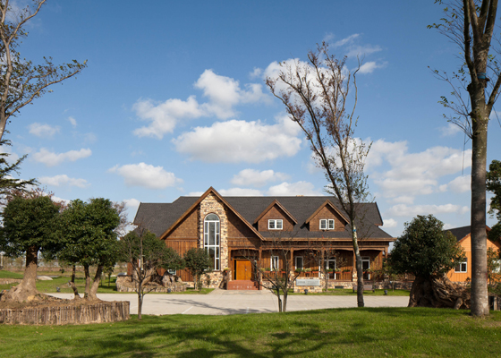
- 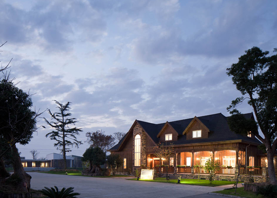
- 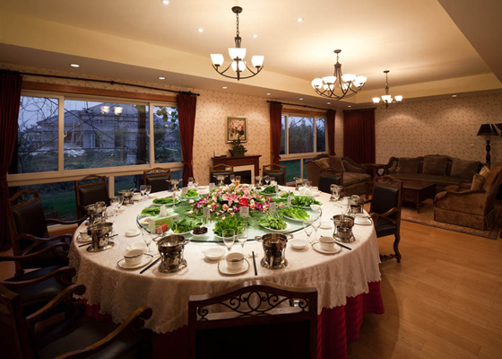
有机展示中心
Organic Exhibition Center
是农庄对外开放的窗口。它是通透的玻璃结构，将多利的形形色色的蔬菜瓜果、多利的育苗技术、栽培方法及灌溉科技一一展现，是农庄的精华所在。
- 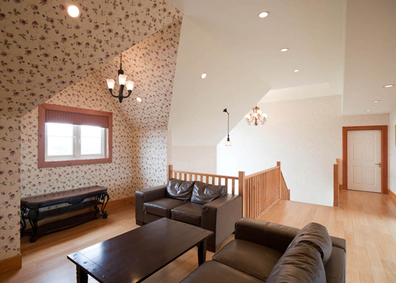
- 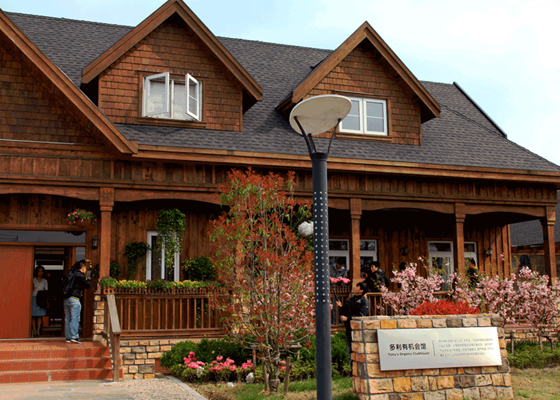
小木屋
Gabins
北美风情木屋会所，特选加拿大魁北克进口优质木材搭建而成。全屋材质可循环再利用绿色、环保、健康。
- 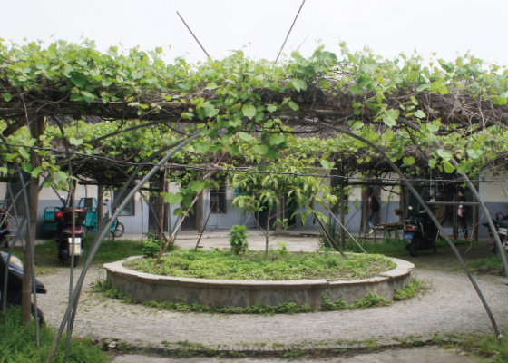
四合院
Courtyard
传统合院式建筑，弥漫着浓郁的传统文化气息，是果言蔬语农庄生态园颇具仿古特色的一个地方，各种地道农家菜香味扑鼻而来，古老、传统与田园清新的气息完美杂糅，只会让您更久停留。
- 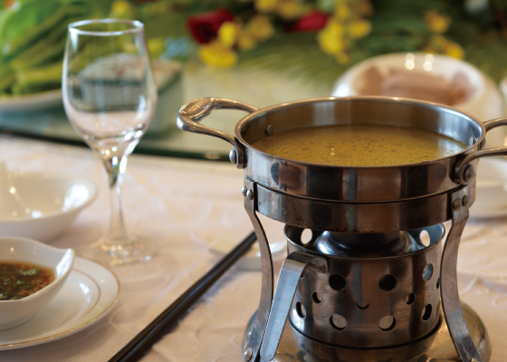
有机小火锅
Organic Hotpot
有机小火锅是果言蔬语农庄的招牌菜。采用自有散养有机土鸡，特选上等药材补品，文火八小时熬制的底汤，配上新鲜的有机蔬菜，一口一个香浓，一口一个新鲜，带来原汁原味的味蕾体验。
- 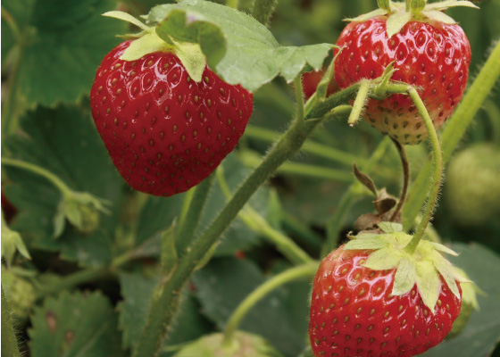
有机红颊草莓
Organic Red-cheek Strawberries
果言蔬语有机红颊草莓，鲜红如小孩红扑扑的脸颊，个头大，颜色分布均匀，果肉乳白色区域较少，它远离化学农药、化肥、激素和其他添加剂的污染，口感质密多汁、健康美味、鲜香沁人。
- 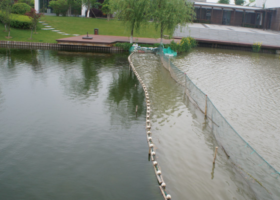
净水分离器
Purified Water Separation Zone
果言蔬语农庄通过水质净化和在农庄周围修建20米宽的水道隔离带，将蔬菜与外界污染、虫害进行隔离，以避免虫病交叉感染，充分保证有机种植基地的水源清洁，使有机蔬菜灌溉用水水质达到居民饮用水标准。
- 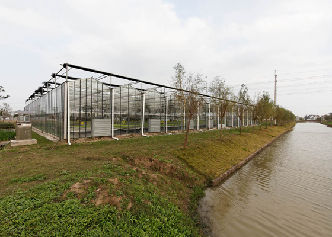
- 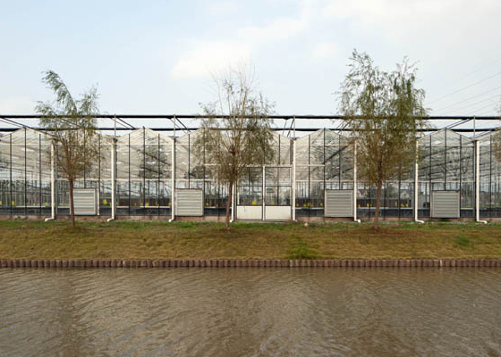
- 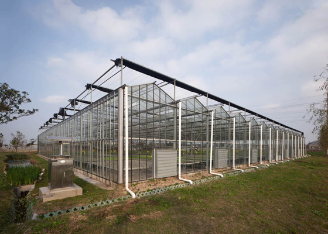
- 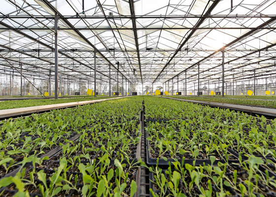
- 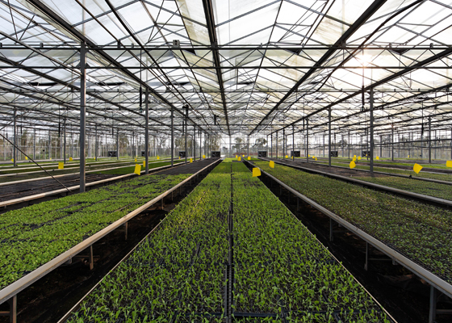
育苗间
Nursery Room
先进的基础设施，全玻璃结构温室;高压喷灌系统，在夏季能起到雾化降温效果:专用水帘和换气扇，让幼苗在夏季也可以正常生长。